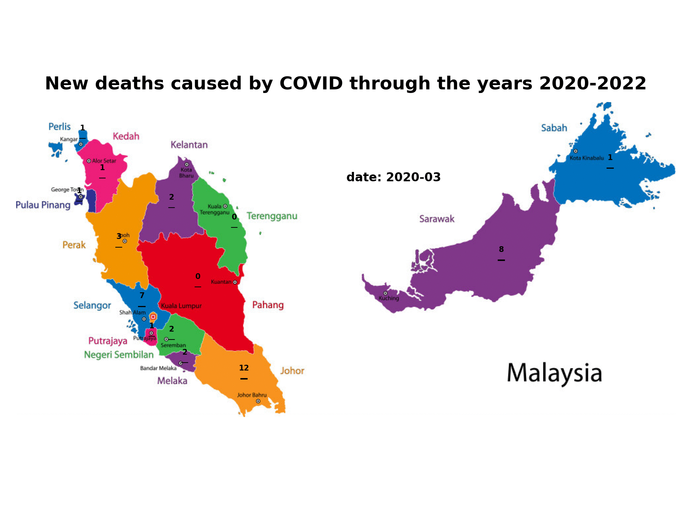
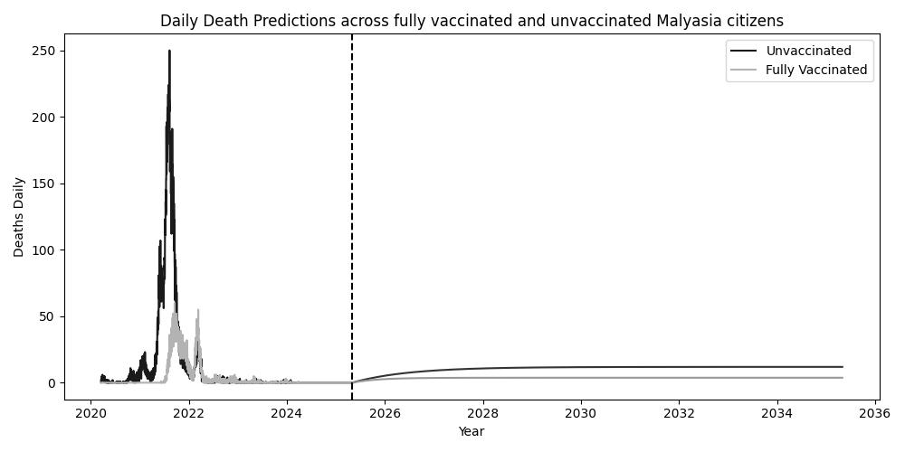
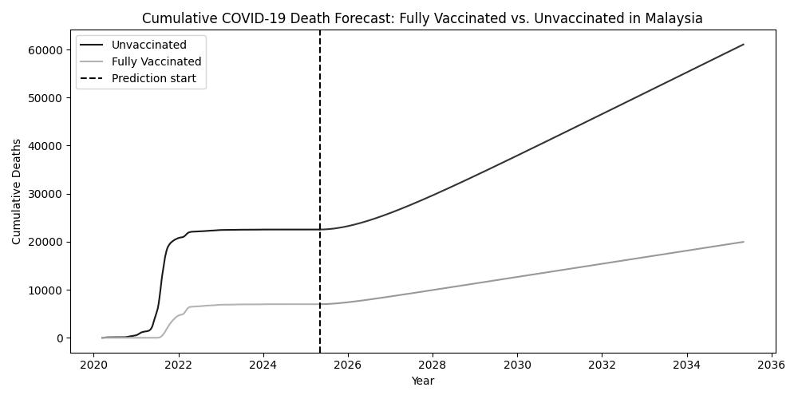
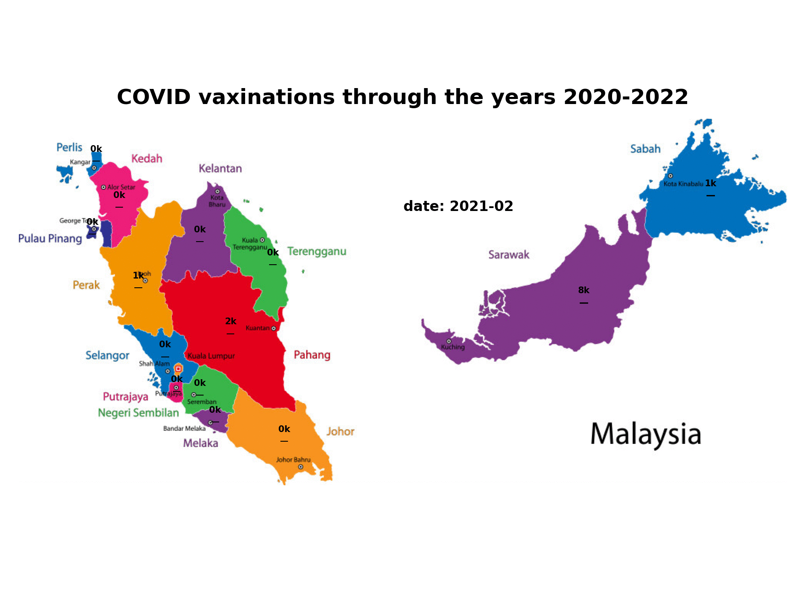
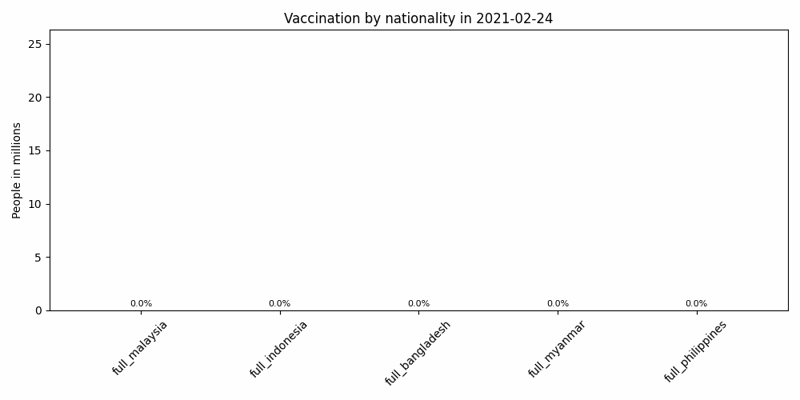
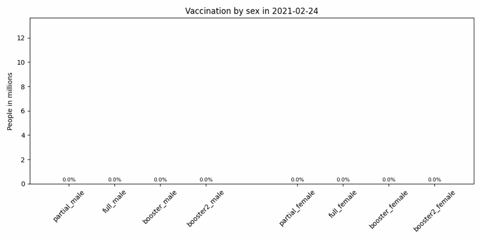

COVID-19 in Malaysia
Mikołaj Dziewiatowski, Norbert Szala
This page presents key trends and visualizations about the COVID-19 pandemic in Malaysia, using interactive and animated plots.
Source: https://github.com/MoH-Malaysia/covid19-public. Access data: 23.05.2025
Active cases in regions
Daily Deaths in regions

Daily deaths in Malaysia - Data historical and prediction using linear regression model.

Cumulative deaths in Malaysia - Data historical and prediction using linear regression model.

Daily vaccine doses in regions

Vaccination in Malaysia across the top five common nationalities - adults (full doses only).

Vaccination in Malaysia across sexes - adults.
